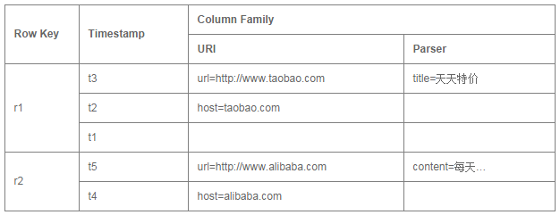
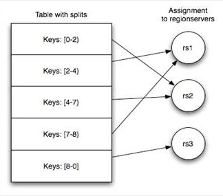
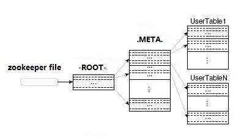

|
|
BigTable |
HBase |
|
文件存储系统 |
GFS |
HDFS |
|
数据处理 |
MapReduce |
Hadoop MapReduce |
|
协调服务 |
Chubby |
Zookeeper |
其中HBase位于结构化存储层。
Hadoop HDFS为HBase提供了高可靠性的底层存储支持。
Hadoop MapReduce为HBase提供了高性能的计算能力。
Zookeeper为HBase提供了稳定服务和failover机制。
Pig和Hive还为HBase提供了高层语言支持，使得在HBase上进行数据统计处理变的非常简单。
Sqoop则为HBase提供了方便的RDBMS数据导入功能，使得传统数据库数据向HBase中迁移变的非常方便。
a. Native Java API：
最常规和高效的访问方式，适合Hadoop MapReduce Job并行批处理HBase表数据
b. HBase Shell：
HBase的命令行工具，最简单的接口，适合HBase管理使用
c. Thrift Gateway：
利用Thrift序列化技术，支持C++，PHP，Python等多种语言，适合其他异构系统在线访问HBase表数据
d. REST Gateway：
支持REST 风格的Http API访问HBase, 解除了语言限制
e. Pig：
可以使用Pig Latin流式编程语言来操作HBase中的数据，和Hive类似。
本质最终也是编译成MapReduce Job来处理HBase表数据，适合做数据统计。
f. Hive：
可以使用类似SQL语言来访问HBase。
(a) Table & Column Family
当Table随着记录数不断增加而变大后，会逐渐分裂成多份splits，成为regions，一个region由[startkey,endkey)表示，不同的region会被Master分配给相应的RegionServer进行管理：

HBase中有两张特殊的Table，-ROOT-和.META.
Ø .META.：记录了用户表的Region信息，.META.可以有多个regoin
Ø -ROOT-：记录了.META.表的Region信息，-ROOT-只有一个region
Ø Zookeeper：记录了-ROOT-表的location
HBase中的所有数据文件都存储在Hadoop HDFS文件系统上，主要包括上述提出的两种文件类型：
a). HFile：
HBase中KeyValue数据的存储格式，HFile是Hadoop的二进制格式文件。
实际上StoreFile就是对HFile做了轻量级包装，即StoreFile底层就是HFile。
b). HLog File：
HBase中WAL（Write Ahead Log） 的存储格式，物理上是Hadoop的Sequence File。